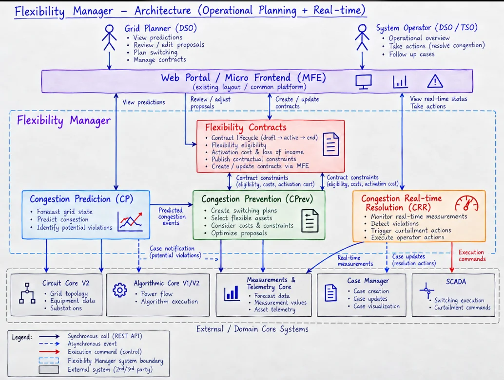

Flexibility Manager - Interview Ready
#Problem Statement
#EnWG §14a
Germany's §14a EnWG (Energy Industry Act), effective January 1, 2024, mandates that network operators conclude agreements with end consumers for network-oriented control of controllable consumption devices in exchange for reduced grid fees. The law explicitly names eligible device classes: non-public EV charging points, heat pumps, cold/energy storage, and night storage heaters — any tapping point on the low-voltage grid with a nominal connected load above 4.2 kW.
The core problem: The rapid proliferation of high-power consumers (especially EV chargers) risks overloading the low-voltage distribution grid during peak demand. Rather than requiring expensive grid expansion, §14a empowers DSOs to temporarily curtail — but not fully cut off — power delivery to registered controllable assets when a local overload is imminent. The law establishes a graduated escalation: economic incentives (price signals) take priority over direct device control, and direct control is the last resort.
Technical delivery channel: Control signals must be transmitted via smart meter gateways conforming to BSI security standards. This is a hard interface constraint for any system implementing §14a compliance.
Compensation for operators: In exchange for accepting DSO control signals, operators receive grid fee reductions via three modules:
- Module 1: Flat annual reduction of €110–€190 per site
- Module 2: 60% reduction on the energy delivery fee (billed per kWh, with separate metering) — up to ~€6,000/year for high-volume sites
- Module 3: Time-variable (dynamic) grid charges — voluntary, launching 2026; up to ~€3,000/year
Architectural implication: A system serving these sites must receive DSO curtailment signals (via smart meter gateway) and translate them into real-time power limits on individual charging sessions — without fully interrupting charging. This requires a Flexibility Manager layer that mediates between external grid signals and the internal load management logic, while simultaneously optimising for other objectives (peak shaving, dynamic tariff savings, charging session continuity). The legal precedence rule (economic signals before direct control) also shapes the system's decision logic: the manager must first attempt soft demand response before applying hard curtailment.
#EnWG §13a — Redispatch 2.0 (MV/HV Grid)
While §14a targets low-voltage consumers, §13a EnWG governs congestion management at the medium-voltage (MV, 1–60 kV) and high-voltage (HV) levels, covering larger generation and consumption assets connected above the LV threshold.
The core problem: As renewable generation (wind, solar) scales up, its volatile feed-in creates congestion in MV/HV grids that cannot be resolved by simple consumer curtailment. Grid operators need to redispatch — i.e., actively ramp generators up or down, or shift flexible loads — to keep the grid in balance without physical expansion.
Scope — who is affected: Since Redispatch 2.0 (October 2021), the obligation extends to:
- All generators with ≥100 kW connected at MV level or above (wind parks, solar farms, biogas plants)
- Large controllable consumers and storage assets at MV level
- Both TSOs (transmission) and DSOs (distribution at MV/HV) now participate and must coordinate
How it works: TSOs and DSOs issue redispatch orders through a standardised data exchange (based on BDEW/VDE-AR-N 4141 and CIM/CGMES formats). Asset operators must have a control system capable of receiving these orders and adjusting output/consumption within defined response times.
Key difference from §14a:
| Aspect | §14a (LV) | §13a (MV/HV) |
|---|---|---|
| Grid level | Low-voltage (<1 kV) | MV/HV (≥1 kV) |
| Primary target | Consumers (EV, heat pump) | Generators + large consumers |
| Signal channel | Smart meter gateway (BSI) | BDEW/VDE-AR-N 4141, CIM |
| Compensation | Grid fee reduction | Redispatch cost reimbursement |
| Trigger | Local DSO congestion | TSO/DSO grid balance |
Architectural implication: A Flexibility Manager serving MV-connected sites (large fleet depots, industrial charging parks with dedicated transformers, on-site generation) must implement the Redispatch 2.0 communication stack rather than the smart meter gateway path. This means a separate integration layer for TSO/DSO redispatch signals, with the same core flexibility logic underneath — making the Flexibility Manager a natural abstraction boundary between grid-level signal protocols and site-level load control.
#Architecture Diagram
